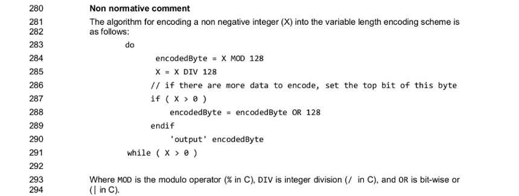

MQTT&Parser Combinators
Qui suis-je ?
- Un développeur
- (Mise en œuvre des) langages
- Systèmes (distribués)
- Telelogic - atelier de génie logiciel
- - Plateforme de «Grid computing»
- OVH - PaaS IoT
- @fcabestre
 https://github.com/fcabestre
https://github.com/fcabestre
Au menu aujourd'hui
- Une librairie MQTT open-source
- Des «parser combinators»
- Du Scala
- Des codeur/décodeurs binaires
- Une brêve apparition de Rust
Encore une bibliothèque MQTT !
- Déjà plus de 70 (mqtt.github.io)
- Java (7), C (5), Elixir, Haskell, Dart...
- Scala + Akka
- Spécification simple
Et donc... MQTT
- Message Queuing Telemetry Transport
- Publish/Subscribe
- TCP
- Né en 1999
- Andy Stanford-Clark (IBM)
- Arlen Nipper (EuroTech)
- Depuis 2014 Standard OASIS
- Dernière version 3.1.1
Critiques
- Spécification imprécise...
- ... En amélioration
- Paradoxes
- Gaspillages
- Qualité de service
Trames et décodeurs
- Protocole ⇒ Messages
- Trames binaires
- Codecs
- Codage fastidieux
Digression : Parser Combinators
- Frost & Launchburry, 1989
- "x * 3.14" ?
- Analyse syntaxique
- Interpréter {x} {*} {3.14}" ?
- Fonctions d'ordre supérieur
- Kombi : Parser x Parser ⇒ Parser
Scodec
- Michael Pilquist (@mpilquist)
- scodec-bits
- Types de base : BitVector et ByteVector
- scodec-core
- Codecs de base : uint16, bool, utf8...
- Combinateurs : >>~, ~,...
Simples codecs
val qosCodec: Codec[Int] = uint2
scala> qosCodec.decode(bin"10")
res0: scodec.Attempt[scodec.DecodeResult[Int]] =
Successful(DecodeResult(2,BitVector(empty)))
scala> qosCodec.decode(bin"1")
res1: scodec.Attempt[scodec.DecodeResult[Int]] =
Failure(cannot acquire 2 bits from a vector that contains 1 bits)
scala> qosCodec.encode(3)
res2: scodec.Attempt[scodec.bits.BitVector] =
Successful(BitVector(2 bits, 0xc))
scala> qosCodec.encode(6)
res3: scodec.Attempt[scodec.bits.BitVector] =
Failure(6 is greater than maximum value 3 for 2-bit unsigned integer)
Simples codecs (suite)
/**
* Codec for 16-bit unsigned big-endian integers.
* @group numbers
*/
val uint16: Codec[Int] = new IntCodec(16, false, ByteOrdering.BigEndian)
val messageIdCodec: Codec[Int] = uint16
scala> messageIdCodec.decode(hex"002ACAFEBABE".bits)
res0: scodec.Attempt[scodec.DecodeResult[Int]] =
Successful(DecodeResult(42,BitVector(32 bits, 0xcafebabe)))
scala> messageIdCodec.encode(4219)
res1: scodec.Attempt[scodec.bits.BitVector] =
Successful(BitVector(16 bits, 0x107b))
Combinateurs
val stringCodec = variableSizeBytes(uint16, utf8)
/**
* Byte equivalent of [[variableSizeBits]].
* @param size codec that encodes/decodes the size in bytes
* @param value codec the encodes/decodes the value
* @param sizePadding number of bytes to add to the size before
* encoding (and subtract from the size before decoding)
* @group combinators
*/
def variableSizeBytes[A](size: Codec[Int],
value: Codec[A],
sizePadding: Int = 0): Codec[A] = ...
scala> stringCodec.encode("MQTT")
res2: scodec.Attempt[scodec.bits.BitVector] =
Successful(BitVector(48 bits, 0x00044d515454))
scala> stringCodec.decode(hex"00064d515454".bits)
res3: scodec.Attempt[scodec.DecodeResult[String]] =
Failure(cannot acquire 48 bits from a vector that contains 32 bits)
Projections
val headerCodec = (bool :: qosCodec :: bool).as[Header]
case class Header(
dup: Boolean = false,
qos: Int = AtMostOnce.enum,
retain: Boolean = false
)
scala> Codec[Header].decode(bin"1100110011")
res0: scodec.Attempt[scodec.DecodeResult[net.sigusr.mqtt.impl.frames.Header]] =
Successful(DecodeResult(Header(true,2,false),BitVector(6 bits, 0xcc)))
Un exemple complet
- Desinscription d'un topic
Un exemple complet (suite)
case class UnsubscribeFrame(
header: Header,
messageIdentifier: Int,
topics: Vector[String]
) extends Frame
val codec: Codec[UnsubscribeFrame] = (
headerCodec ::
variableSizeBytes(
remainingLengthCodec, messageIdCodec :: vector(stringCodec)
)
).as[UnsubscribeFrame]
val discriminator: Discriminator[Frame, UnsubscribeFrame, Int] = Discriminator(10)
Et si c'est pas prévu ?
Intérêts
- Modularité
- Maintenable
- Typage (fort) ⇒ sécurité
- Performance ?
Usages
- Exemples UDP, MPEG, libpcap
- Brendan McAdams, HammerSmith
- Verizon, Remotely
- Travis Brown, Finagle
Scala ! Soyons sérieux !
- Complexité & Lourdeur
- Embarqué, oui mais...
- ... Infrastructures aussi
- Ce n'est pas que Scala
Rust à la rescousse
- Devoxx 2015
- Geoffroy Croupie (@gcroupie)
- De l'API au protocole
- Rust
- Nom